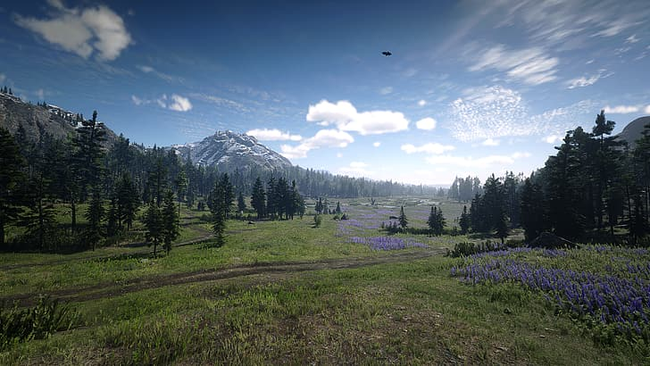
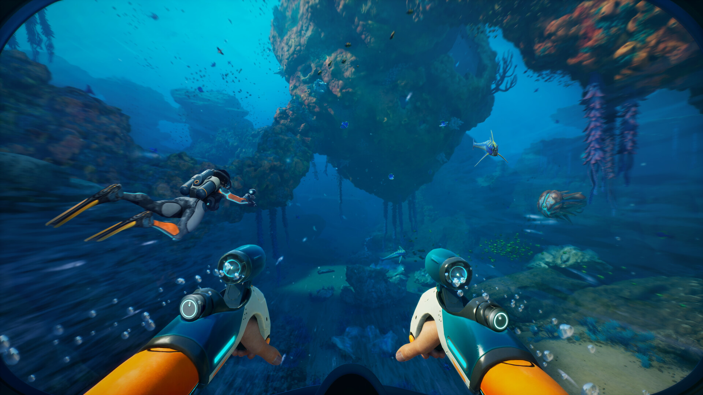
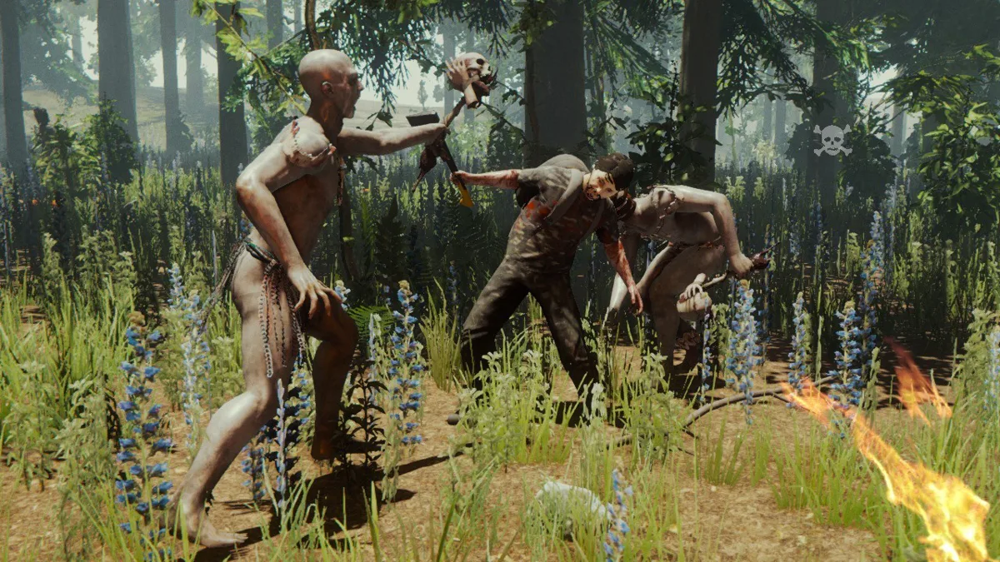

Видавці Ігор Жанру Survival
Rockstar Games
Red Dead Redemption 2 — одна з найпопулярніших ігор жанру survival, розроблена та випущена компанією Rockstar Games. Гра відзначається величезним відкритим світом, детальною симуляцією виживання та глибокою сюжетною лінією, яка розкриває труднощі життя на Дикому Заході. Гравці повинні управляти запасами їжі, води, підтримувати здоров'я та адаптуватися до мінливих умов природи.
Unknown Worlds Entertainment
Subnautica — інноваційна гра, випущена студією Unknown Worlds Entertainment. У грі гравці досліджують підводний світ, збирають ресурси для виживання та стикаються з унікальними небезпеками. Гравець може створювати бази, щоб покращити шанси на виживання, і навіть будувати субмарини для подорожей у глибини океану. Ця гра стала еталоном підводного survival-жанру.
Facepunch Studios
Rust — багатокористувацька гра про виживання, розроблена Facepunch Studios. Гравці починають без нічого, з одним лише каменем, і повинні зібрати ресурси для створення інструментів, зброї та баз. Взаємодія між гравцями може бути як дружньою, так і ворожою, що створює динамічний ігровий процес. Гра також відома своїми частими оновленнями, які додають нові механіки.

Bohemia Interactive
DayZ — постапокаліптична гра, яка поєднує елементи виживання та симуляції. Гравцям доводиться виживати в зараженому зомбі світі, збирати їжу, воду, ліки та уникати або боротися із загрозами. Bohemia Interactive створила унікальну атмосферу відчаю, яка підкреслюється обмеженими ресурсами і необхідністю взаємодії з іншими гравцями.

Endnight Games
The Forest — гра, яка поєднує елементи виживання з жахами. Гравці опиняються в дикому лісі, населеному ворожими істотами. Endnight Games зробила акцент на реалістичній фізиці, будівництві та атмосферному звуковому дизайні, що робить гру однією з найстрашніших у жанрі.
